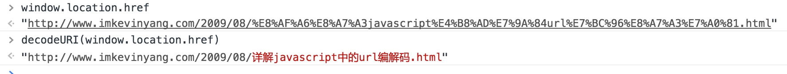

js中的url网址编码，及编码方式 ASCII、unicode 、utf-8 编码
由于“为什么网址要进行 encodeUURI 和 decodeURI” 引申出了字符编码的一系列问题。
先回答网址为什么要进行编码
link：ruanyifeng
基础的一些字符不需要经过编码，他们是：
“…Only alphanumerics [0-9a-zA-Z], the special characters “$-.+!*’(),” [not including the quotes - ed], and reserved characters used for their reserved purposes may be used unencoded within a URL.”
“只有字母和数字[0-9a-zA-Z]、一些特殊符号”$-.+!*’(),”[不包括双引号]、以及某些保留字，才可以不经过编码直接用于URL。”
因为网址的路径、？号后面的查询字符串、以及get post请求的网址中，通常都是各种国家的语言，编码方式也不同，那么我们就要将它们统一成一种编码，以方便浏览器和服务器处理
自然这种处理字符编码的任务就落到了脚本语言 js 的身上了。
ps:我们在浏览器的地址栏中经常能够看到中文是因为浏览器在地址栏中使用了 decodeURI ，例如我们可以在控制台看到 window.locaton.href 中特殊字符都是经过了utf-8编码的

js中字符编码的三个函数：escape unescape encodeURI decodeURI encodeURIComponent decodeURIComponent
escape 是以前使用的老式写法，会把字符转化成 unicode 格式，不要使用
encodeURI 把字符转化为 utf-8 格式，并在每个字符前面加上 %
对其他一些在网址中有特殊含义的符号”; / ? : @ & = + $ , #”，encodeURI也不进行编码
encodeURIComponent
与encodeURI()的区别是，它用于对URL的组成部分进行个别编码，而不用于对整个URL进行编码。因此，”; / ? : @ & = + $ , #”，这些在encodeURI()中不被编码的符号，在encodeURIComponent()中统统会被编码。至于具体的编码方法，两者是一样。
编码方式 ASCII、unicode 、utf-8
link: ruanyifeng
最早美国人使用计算机就只会用到数字、大小写字母、和一些特殊的符号。所以美国制定了 ASCII 标准：用一个字节（占8个二进制位）表示一个字符，2^8=256，但是只用到了128个，所以每个字节的第一位规定是0，比如我们常见的 A 56, a 97, 0 48这些顺序就是ASCII顺序
随着计算机的发展，各个国家的文字都不一样，适应ASCII可定满足不了需求，就算把 ASCII 没用到的第一位用上，总共也只能表示 256 个字符。所以就出现了 unicode（unique是唯一的意思），每个国家的每一个字符的编码是唯一的
需要注意的是，Unicode只是一个符号集，它只规定了符号的二进制代码，却没有规定这个二进制代码应该如何存储。比方说我实现unicode的时候可以用三个字节来存储、也可以用四个字节来存储，具体的存储实现方式可以不同。
utf-8只是 unicode 的一种具体实现方式
UTF-8是Unicode的实现方式之一。
UTF-8最大的一个特点，就是它是一种变长的编码方式。它可以使用1~4个字节表示一个符号，根据不同的符号而变化字节长度。